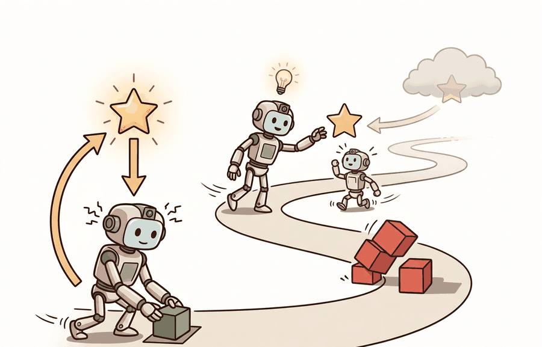

A Careful Control Loop

Learning from interaction, return, and discounting explains how a robot turns a sequence of consequences into a training target. The section connects the MDP/POMDP contract to the arithmetic that assigns delayed reward and penalty back to earlier actions.
This section links back to Chapter 7: Control for AI Practitioners and Chapter 10: Environments with Gymnasium and PettingZoo, then prepares the policy-gradient work in Chapter 15: Policy Gradient Methods and PPO. The goal here is not to memorize notation; it is to know exactly what experience tuple an embodied agent records and how delayed rewards become a single training signal.
This section develops the technical contract for learning from interaction, return, and discounting. First we define the MDP and POMDP objects, then we derive the return used by value functions, then we test the arithmetic on a short robot episode.
The key question is practical: when a robot receives a reward several seconds after a motor command, how should the learning system assign that reward to earlier actions without pretending the future is as certain as the present?
Reinforcement learning is supervised by consequences, not by labeled answers. The return converts a stream of local consequences into the scalar objective that policy learning can optimize.
Theory
An MDP is the cleanest mathematical starting point for interaction. It is a tuple $(\mathcal S,\mathcal A,P,R,\gamma)$: states $s \in \mathcal S$, actions $a \in \mathcal A$, transition probabilities $P(s' \mid s,a)$, rewards $R(s,a,s')$, and a discount factor $\gamma \in [0,1)$. The Markov assumption says the current state contains all task-relevant history: once $s_t$ and $a_t$ are known, older states do not change the distribution of $s_{t+1}$.
Embodied agents rarely receive the true state directly. A POMDP adds observations $(\mathcal O, O)$, where $O(o \mid s)$ describes how sensors produce observations from hidden physical state. The robot may see pixels, joint encoders, force readings, and latency-corrupted messages, while the state also includes unobserved friction, object mass, and contact geometry. In practice, the policy acts on $o_t$ or a belief/state estimate $\hat s_t$, while the formal MDP remains the reference model for what the environment is doing.
A trajectory is the ordered interaction record $\tau=(s_0,a_0,r_1,s_1,a_1,r_2,\ldots)$. The return from time $t$ is
$$G_t = \sum_{k=0}^{\infty}\gamma^k r_{t+k+1}.$$
Each term answers a credit assignment question. $r_{t+1}$ is the immediate consequence of the current action; $\gamma r_{t+2}$ gives the next consequence slightly less weight; $\gamma^2 r_{t+3}$ gives the following consequence less weight again. A small $\gamma$ teaches short-horizon reflexes. A large $\gamma$ makes the policy care about delayed outcomes such as recovering balance after a stumble or avoiding a collision three actions later.
The mechanism is a repeated tuple: observe, act, receive reward, transition. Discounting does not change the world; it changes how much future evidence the learning objective treats as relevant to the present decision.
Worked Example
Consider a mobile manipulator with four measured consequences after a grasp attempt: a small movement cost, a contact bonus, a delayed placement reward, and a final safety penalty. Code Fragment 1 computes the return backward so the reader can verify exactly how each future consequence reaches the current action.
# Compute discounted returns for one embodied episode.
# Backward accumulation makes delayed placement and safety effects visible.
rewards = [-0.2, 0.4, 2.0, -1.0]
gamma = 0.9
returns = []
running_return = 0.0
for reward in reversed(rewards):
running_return = reward + gamma * running_return
returns.append(round(running_return, 3))
returns.reverse()
for t, (reward, discounted_return) in enumerate(zip(rewards, returns)):
print(f"t={t}: reward={reward:+.1f}, G_t={discounted_return:+.3f}")The expected output should be read from bottom to top as a backward return construction. The key interpretation is that the early negative reward at t=0 still receives a positive return because later placement success outweighs it after discounting, while the terminal penalty remains fully visible at t=3.
The first action has a negative immediate reward but a positive return because it helped set up later success. This is the central difference between reinforcement learning and one-step supervision: the learning target for an action is not only what happened immediately after it, but what the episode eventually made possible.
In practical experiments, Gymnasium supplies the step interface that records $(o_t,a_t,r_{t+1},o_{t+1})$, while training libraries compute return targets at scale. The useful shortcut is not hiding the math; it is standardizing the interaction record so every policy sees the same episode semantics.
Practical Recipe
- Write the observation, action, and success metric before choosing a model.
- Build a baseline that is simple enough to debug by inspection.
- Add the library implementation only after the baseline behavior is understood.
- Record failures as structured cases: perception error, state error, planning error, control error, or evaluation error.
- Run at least one perturbation test before trusting the result.
The common mistake in Learning from interaction; return and discounting is to celebrate the component score before checking the closed-loop handoff. The failure usually appears at the boundary: stale state, wrong frame, delayed action, saturated actuator, or metric that ignores the real task cost.
A robotics team training a drawer-opening policy should log the full sequence: image observation, gripper pose, action command, contact event, reward, and termination reason. A final success rate alone cannot tell whether the policy learned smooth opening, lucky initial contact, or an unsafe yank followed by recovery.
Discounting is the robot's memory budget written as arithmetic. A high value of $\gamma$ says, "blame or credit me for consequences that arrive later."
A current research pressure point is how to combine long-horizon return objectives with foundation-model priors and real robot data. The hard part is not writing $G_t$; it is deciding which delayed physical outcomes deserve reward when observations are partial, resets are costly, and unsafe exploration cannot be treated as another sample.
Given an episode log, can you identify $o_t$, $a_t$, $r_{t+1}$, termination, and the return target for each action? If not, the learning signal is still too vague.
The MDP formalism is a modeling claim, not a fact about the robot. When the true physical state is hidden, the implemented learning system either uses observations directly or builds a belief/state estimate. A good chapter artifact names which one it uses, because $V^\pi(s)$ and $V^\pi(\hat s)$ are different claims.
Discounting also has a physical interpretation. If $\gamma=0.99$, the learning objective still gives substantial weight to consequences hundreds of steps later; if $\gamma=0.5$, consequences fade quickly. Choose it to match the task horizon and controller rate, not as an inherited default.
| Choice | What It Means | Embodied Risk |
|---|---|---|
| Reward timing | Whether reward arrives after every step, after milestones, or only at termination. | Sparse terminal rewards can make credit assignment too slow for hardware data budgets. |
| Discount factor | How much delayed consequences shape the current target. | A short horizon can ignore delayed collisions; a long horizon can make estimates noisy. |
| Termination rule | Which state ends the episode and stops return accumulation. | Ending too early can hide recovery behavior; ending too late can dilute the task signal. |
A robust implementation starts by making the episode schema explicit. Every row should contain observation, action, reward, next observation, termination, truncation, and any safety event. Once that schema is stable, the same return computation can be applied to simulator traces, replay buffers, and hardware logs.
- Define the MDP or POMDP fields before collecting data.
- Write the reward in units a domain expert can inspect.
- Choose $\gamma$ from task duration and control frequency.
- Compute returns from saved traces and spot-check at least one episode by hand.
- Store raw rewards and returns, since later algorithms may use different horizons.
When return learning fails, first inspect the episode boundary and reward timing. Many apparent algorithm failures are target-construction failures: rewards arrive one step late, terminal penalties are dropped, time-limit truncations are treated as true failures, or observations do not contain the state needed for the Markov assumption.
For return and discounting, compare policies only when returns are computed from the same saved traces or from one evaluation script using the same reward, termination rule, $\gamma$, seed set, and time-limit handling.
The return is the bridge from experience to learning target. If it is miscomputed, every later value estimate and policy update inherits the error.
Take a five-step robot episode with rewards of your choice, choose $\gamma=0.95$, and compute every $G_t$. Then change one terminal penalty and explain which earlier actions receive different targets.
What's Next?
This section turned interaction into a return target. Next, Section 14.2 uses that target to define policies, state values, action values, and Bellman equations.
The standard textbook for RL foundations. Read Part I for MDPs, value functions, and the Bellman equations; Part II for TD learning and eligibility traces; Part III for function approximation and policy gradient theory. It is the primary notation reference for this module.
Puterman, M. L. (1994). Markov Decision Processes: Discrete Stochastic Dynamic Programming. Wiley.
Provides the formal mathematical treatment of MDPs, Bellman equations, and the theory of optimal policies. Read Chapter 4 for policy evaluation and Chapter 6 for policy iteration; this is the reference to check when the intuitions from Sutton and Barto need formal grounding in existence and convergence proofs.
Brockman, G. et al. (2016). OpenAI Gym. arXiv.
Introduced the step/reset/render environment interface that became the standard for RL research. Read for the API contract; nearly every RL library and tutorial assumes this interface, and Gymnasium maintains it with minor extensions. Understanding it is prerequisite to using PettingZoo, Isaac Lab, or MuJoCo.
Towers, M. et al. Gymnasium documentation. Farama Foundation.
The actively maintained successor to OpenAI Gym with bug fixes, consistent seeding, and terminated/truncated distinction. Use this as the environment API reference throughout the chapter; the terminated/truncated split matters for bootstrap targets at episode boundaries.
Todorov, E., Erez, T., and Tassa, Y. (2012). MuJoCo: A physics engine for model-based control. IROS.
Describes the contact physics model, generalized coordinates, and constraint solver that make MuJoCo accurate and fast for robot learning. Read the original paper to understand why smooth contact gradients benefit model-based methods; in practice use the official docs for API, but this paper explains why MuJoCo physics behaves differently from game-engine simulators.